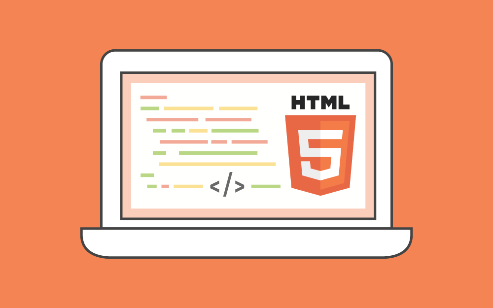
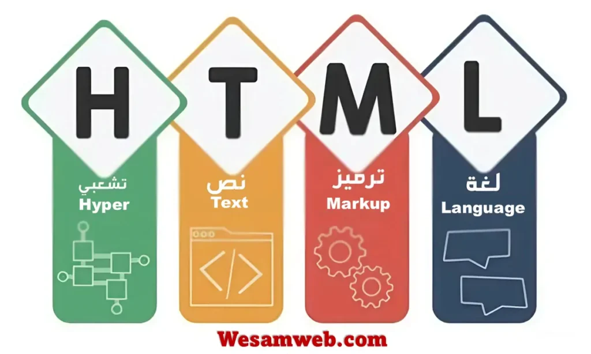
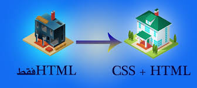

.jpg)
1. الهيكل الذكي (HTML)
▼
اللغة التي تحدد محتوى الصفحة. في عصر الـ AI، تعتبر هيكلة البيانات الجيدة أمرًا حيويًا لتفهم المحركات الذكية محتوى موقعك.
- تاريخ التأسيس: تم تطويرها بواسطة تيم بيرنرز لي في عام 1991.
- الإصدار الحالي: HTML5 هو المعيار الحالي والأكثر استخداماً حالياً.
- آلية العمل: تتكون من "وسوم" (Tags) تُكتب بين أقواس زاوية <> وتكون عادةً مزدوجه وسم بدايه tag ووسم إغلاق /tag.
- <> لهيكل الأساسي للمستند: !DOCTYPE html : تعريف إصدار HTML5. html : وسم الجذر. head : يحتوي على معلومات وصفية (عنوان الصفحة، ترميز النص). body : يحتوي على المحتوى الظاهر للمستخدم. <> لهيكل الأساسي للمستند: !DOCTYPE html : تعريف إصدار HTML5. html : وسم الجذر. head : يحتوي على معلومات وصفية (عنوان الصفحة، ترميز النص). body : يحتوي على المحتوى الظاهر للمستخدم.
- السمات (Attributes): توفر معلومات إضافية للعناصر، مثل ssimg src="image.jpg".
- بناء النصوص والروابط والقوائم.
- دمج الوسائط (صور وفيديو).
- استخدام علامات (Semantic HTML) لتحسين SEO.
- و اي امر يكتب في الهيكل الاساسي في صفحه لغه Html يكتب في <>


2. التصميم المتجاوب (CSS)
▼
تمنح الموقع مظهره. يمكنك استخدام أدوات التصميم الحديثة لبناء واجهات تحاكي تصميمات الذكاء الاصطناعي المعقدة بنعومة.
- تحديد الألوان والخطوط العصرية.
- إنشاء شبكات مرنة (Grid & Flexbox).
- إضافة تأثيرات التضبيب والشفافية الرائعة.
- طرق إدراج CSS: خارجي (External): ملف .css منفصل (الأفضل). داخلي (Internal): داخل وسم style في رأس الصفحة. مباشر (Inline): داخل وسم HTML باستخدام خاصية style.
- مكونات قاعدة CSS: تتكون من محدد (Selector) لاستهداف عنصر HTML، وخصائص (Property) وقيم (Value) للتنسيق [مثال: `h1 {color: blue;`] https://www.ar-wp.com/css/}.
- التطور: بدأت عام 1996 وتطورت لتصل إلى CSS3 و CSS4، التي تدعم حركات (Animations)، تدرجات لونية، وتخطيطات متقدمة مثل Flexbox و Grid.


3. منطق التفاعل والـ AI (JavaScript)
▼
لغة البرمجة التي تجعل الموقع حياً. هي الجسر الذي يربط موقعك بنماذج الذكاء الاصطناعي القوية (مثل ChatGPT API).
- التحكم في عناصر الصفحة ديناميكياً.
- الاتصال بالخوادم وجلب البيانات (APIs).
- تشغيل نماذج الـ AI البسيطة مباشرة في المتصفح.